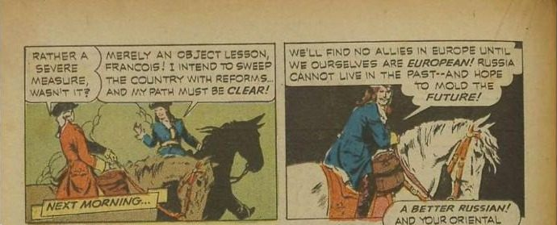

How it works: read the comic pages → answer the question about today's big idea → see what the comic got right and wrong → write 1–2 sentences. Done = all parts green, then turn in at the bottom.
Word help (tap to open)
- Absolutism = one ruler holds all the power, and no one can say no
- Czar (ZAR) = the title of Russia's ruler
- Westernize = copy the ways of Western Europe
- Ukase (yoo-KAZE) = an order from the czar that everyone must obey
- Nobles = rich families with titles and land
- 1942 comic = made for American kids in the 1940s. It uses some old words and shows one point of view.

Click the page to make it bigger.
Turn in your work
Your work saves on this device, so you can come back later. Your teacher sees it after you turn it in.
Comic: Real Life Comics no. 6 (1942), Nedor Publishing, a true-history comic of the 1940s. Public domain. Page images from Comic Book Plus (comicbookplus.com). Cropped to today's reading.